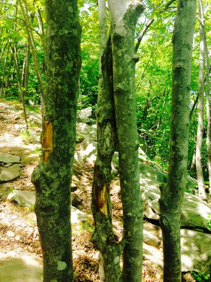

Middlesex Fells Reservation
Skyline Trails
Middlesex Fells Reservation, is Massachusetts state park located in Malden, Medford, Melrose, Stoneham, and Winchester.
This hike is really long and not easy. You could spend a full day hiking across woods, boulder and ponds. Indeed, do not mistake the Skyline Trail for a quick afternoon walk. At about 7 miles in length, it is a real hike that can take most of a day if you like to stop frequently. In addition to being long, it is also a difficult hike, with several ascents and descents likely to wear you out if you are not in shape. There are points when you have to have real courage to walk and hike.
As you start your walk from parking lot it will lead you to the main trail, leaving Bellevue Pond on your left. This will lead you to Pine Hill point, there is an Observation tower offers spectacular views of Boston. By reaching this point you can be tried.
Trials:
The trials is almost 7 miles long. It is a real hike can take full day. Allow for about 5 hours to complete the hike.
When to visit:
You can go any time you wish but I recommend going to Skyline trail summer or fall on a nice sunny day. Touring the Fells on the Skyline Trail, you may sometimes believe you are deep in the woods.
What to bring:
You can bring your food, water, snacks, sunscreen, bug spray, a camera, flashlights, knife, a sweatshirt,
Park Directions
For more info click here